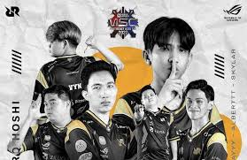

PRESTASI RRQ HOSHI
Juara MPL Indonesia Season 5
RRQ Hoshi meraih gelar juara MPL ID S5 setelah mengalahkan EVOS Legends di babak Grand Final.

Juara MPL Indonesia Season 6
Kembali menjadi raja, RRQ berhasil mempertahankan gelar juaranya di musim berikutnya.

Runner-up MSC 2022
Meskipun belum berhasil menjadi juara, RRQ Hoshi berhasil mencapai Grand Final MSC 2022.
Runner-up M1 World Championship
Prestasi Internasional pertama RRQ dengan menjadi runner-up di kejuaraan dunia Mobile Legends pertama.